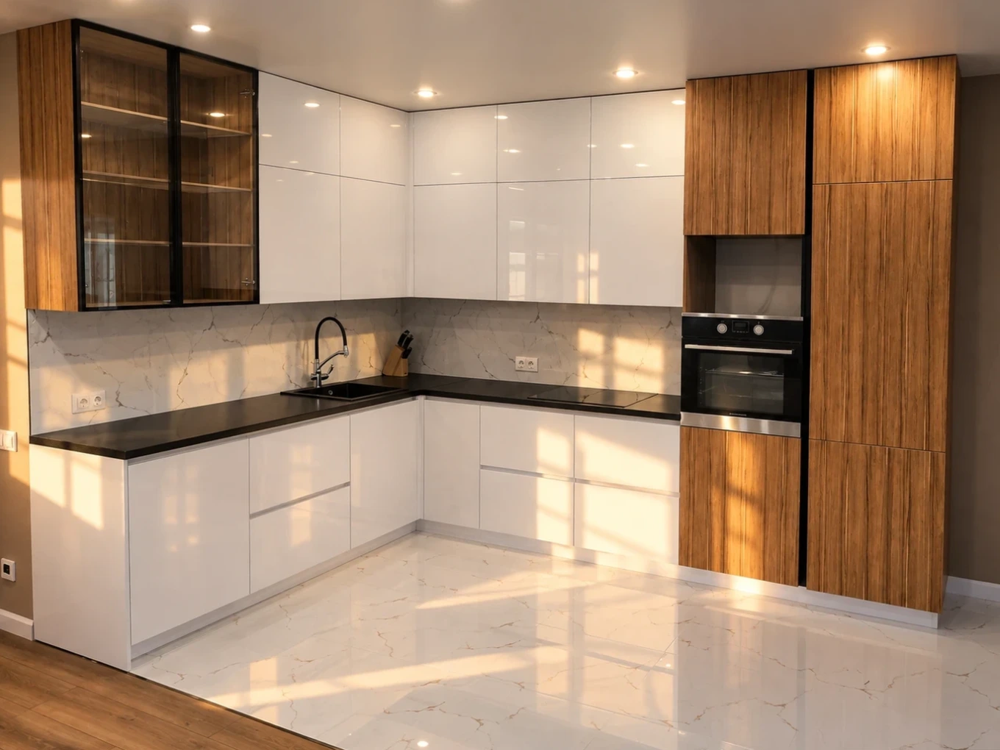
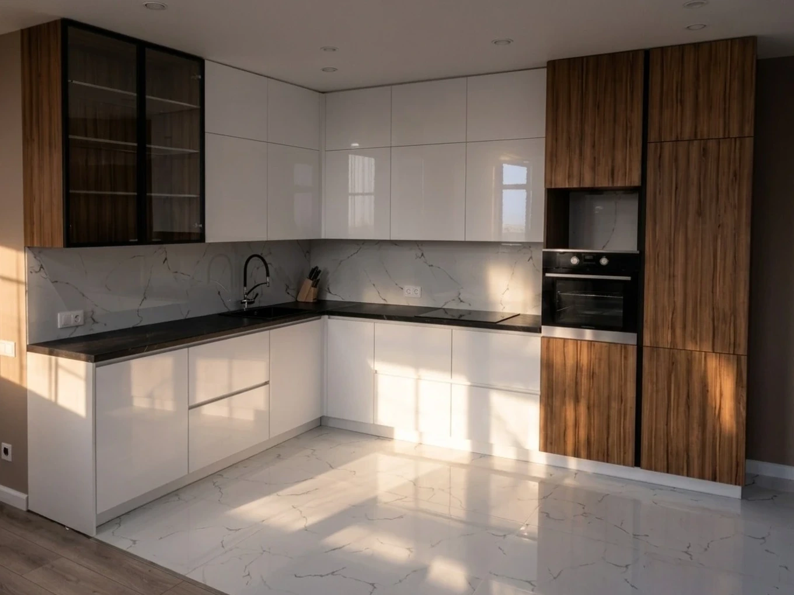
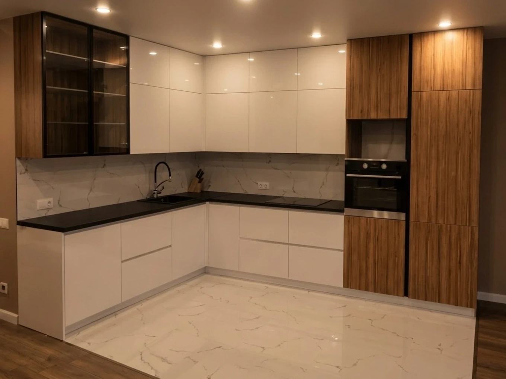

Проект · угловая кухня, глянец и шпон
Все три кадра сведены в общую рамку: одна точка съёмки, один масштаб, один кроп. При переключении меняется только освещение.



День · прямое солнце
← → переключают, 1–3 выбирают